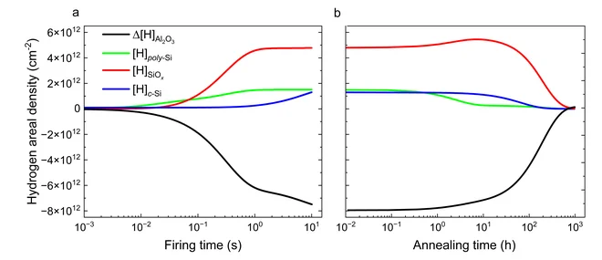

Hydrogen transport model
A Python model represents the Al₂O₃, poly-Si, SiOₓ, and crystalline-Si layers as connected volumes with mobile and trapped hydrogen populations. Temperature-dependent diffusion, trapping, and detrapping evolve through firing and annealing schedules using PETSc time integration. The code also runs parameter sweeps, caches results, and compares predicted oxide hydrogen trends against several experimental conditions. A reduced finite-volume formulation made these sweeps tractable, cutting runtime by over 40,000×.